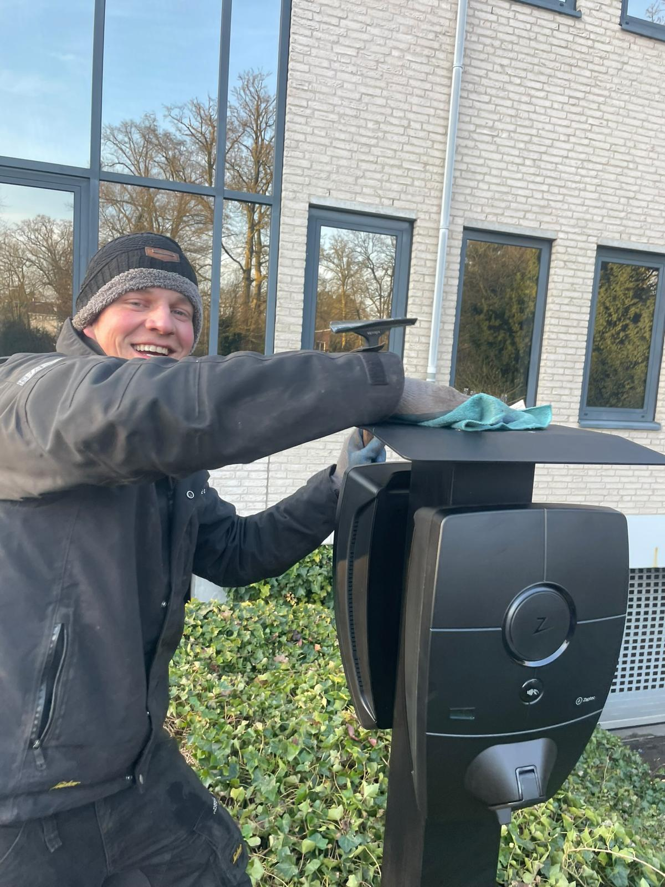

Echte uurtarieven
Geen vast tarief, maar de werkelijke prijs van dat uur.
Laden & stroom
Een slimme laadpaal die automatisch laadt op het overschot van je panelen of op het laagste uurtarief. Aangestuurd door Jullix, geïnstalleerd door eigen monteurs. Klaar om slim te laden?

Laadpaal
De laadpaal kijkt mee met uw opwek en de uurprijzen. Schijnt de zon, dan gaat het overschot naar uw auto (als u zonnepanelen heeft). Is het bewolkt, dan wacht de laadpaal tot de stroom goedkoop is.
Dynamische stroom
Met een dynamisch contract betaal je per uur wat stroom op dat moment kost. Daardoor kan Jullix je batterij en je auto laden wanneer het het voordeligst is. Hiervoor werken we samen met NieuweStroom — Nuzon is zelf geen energieleverancier.
Geen vast tarief, maar de werkelijke prijs van dat uur.
Goedkope uren gaan de batterij in, dure uren gebruik je die.
Jullix beslist; jij hoeft er niet naar te kijken.
We leggen uit wanneer dynamisch wel en niet verstandig is.
Wat we plaatsen
Welke paal en welk vermogen het worden, hangt volledig af van je aansluiting, je auto en waar de paal komt te staan.
We installeren laadpalen van Zaptec, Peblar en Alfen — drie merken die we kennen, die goed te koppelen zijn aan slim laden en waar we onderdelen voor hebben. Voor bedrijven plaatsen we daarnaast snelladers, bijvoorbeeld voor een wagenpark dat tussen twee ritten door moet bijladen.
Thuis is de keuze meestal 11 kW of 22 kW. Meer is niet altijd beter: 22 kW vraagt om een driefase-aansluiting die genoeg ruimte overhoudt, en niet elke auto laadt zo snel. Welke van de twee het wordt, hangt af van je meterkast, je jaarverbruik, hoeveel kilometers je rijdt en of er nog een warmtepomp of thuisbatterij bij komt. Dat kijken we op locatie na — een paal die je aansluiting overbelast, is duurder dan een paal die iets langzamer laadt.
We leveren load balancing standaard mee: de laadpaal kijkt mee met wat de rest van je huis op dat moment verbruikt en zakt terug als de oven, de vaatwasser en de wasdroger tegelijk aanstaan. Zo houd je je hoofdzekering heel zonder dat je erover na hoeft te denken. Moet je groepenkast daarvoor aangepast worden, dan doen we dat in dezelfde afspraak — het is elektrotechnisch werk dat we zelf uitvoeren, met een NEN 1010-gekwalificeerde installateur.
Slim laden
Een gewone laadpaal begint te laden zodra je de stekker erin steekt — ook als dat net het duurste uur van de dag is, of net wanneer je panelen niets doen. Met het Jullix-energiebeheersysteem ertussen gaat dat anders: het systeem kijkt naar wat je panelen opwekken, wat je huis verbruikt, wat er in je thuisbatterij zit en wat stroom dit uur kost, en verdeelt op basis daarvan.
In de praktijk betekent dat: schijnt de zon, dan gaat je overschot naar de auto in plaats van tegen een lage vergoeding het net op. Is het bewolkt en heb je een dynamisch contract, dan wacht de paal tot de goedkope nachturen. Wil je morgenvroeg gewoon een volle accu, dan zeg je dat in de app en gaat dat voor.
Voor dynamische stroom werken we samen met NieuweStroom. Belangrijk om te weten: het energiebeheersysteem werkt met elke leverancier — je hoeft dus niet over te stappen om slim te kunnen laden. Nuzon is zelf geen energieleverancier en verdient niets aan je contract.
Je hoeft niets aan te zetten. Het systeem kiest het goedkoopste moment, jij vindt 's ochtends een volle auto.
FAQ
Dat hangt af van je aansluiting en je auto. 22 kW vraagt om een driefase-aansluiting met genoeg ruimte, en lang niet elke auto laadt zo snel. We kijken naar je meterkast, je verbruik en je kilometers en adviseren op basis daarvan — niet standaard het zwaarste.
Nee, daar is lastbalancering voor, en die leveren we standaard mee. De paal zakt automatisch terug als de rest van je huis veel vraagt. Moet je groepenkast aangepast worden, dan doen we dat erbij.
Ja. Met Jullix ertussen gaat het overschot van je panelen naar de auto in plaats van het net op. Heb je ook een thuisbatterij, dan verdeelt het systeem tussen batterij, huis en auto.
Nee. Voor dynamische stroom werken we samen met NieuweStroom, maar het energiebeheersysteem werkt met elke leverancier. Nuzon verkoopt zelf geen stroom.
Ja, van losse palen op een parkeerterrein tot snelladers voor een wagenpark, inclusief de aansluiting en de verdeling over de locatie.